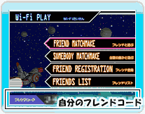
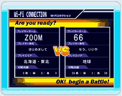
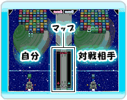

16 |
Wi-Fi PLAYについて |
 |
モードセレクト画面で 「Wi-FiPLAY-Wi-Fiたいせん」を選ぶとニンテンドーWi-Fiコネクションでフレンドや全国のプレイヤーと対戦できます。 ・フレンドと遊ぶ フレンド登録してあるフレンドと対戦することができます。 ・全国の誰かと遊ぶ 全国のプレイヤーと対戦することができます。 ・フレンド登録 フレンドコードを登録できます。 ・フレンドリスト 登録してあるフレンドコードの確認、変更、削除ができます。
●フレンドとの対戦について フレンドと対戦をするには、あらかじめフレンドコードを交換し、お互いにフレンド登録しておく必要があります。 フレンドコードでお互いにフレンド登録しておきましょう。自分のフレンドコードは「Wi-FiPLAY-Wi-Fiたいせん」画面の下に表示されています。
●Wi-Fi対戦画面のルール説明 なお、ゲームの設定は「４色」「ふつう」の設定となっています。※Wi-Fi対戦のゲームの設定を変えることはできません。
全国のプレイヤーと対戦を楽しみましょう。 |
 |
 |
 |